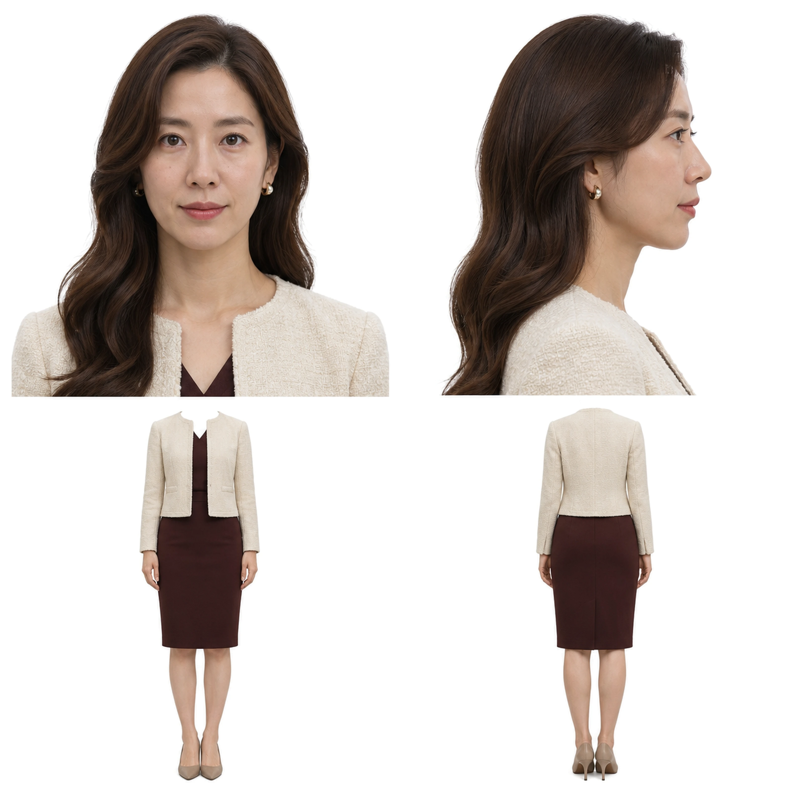
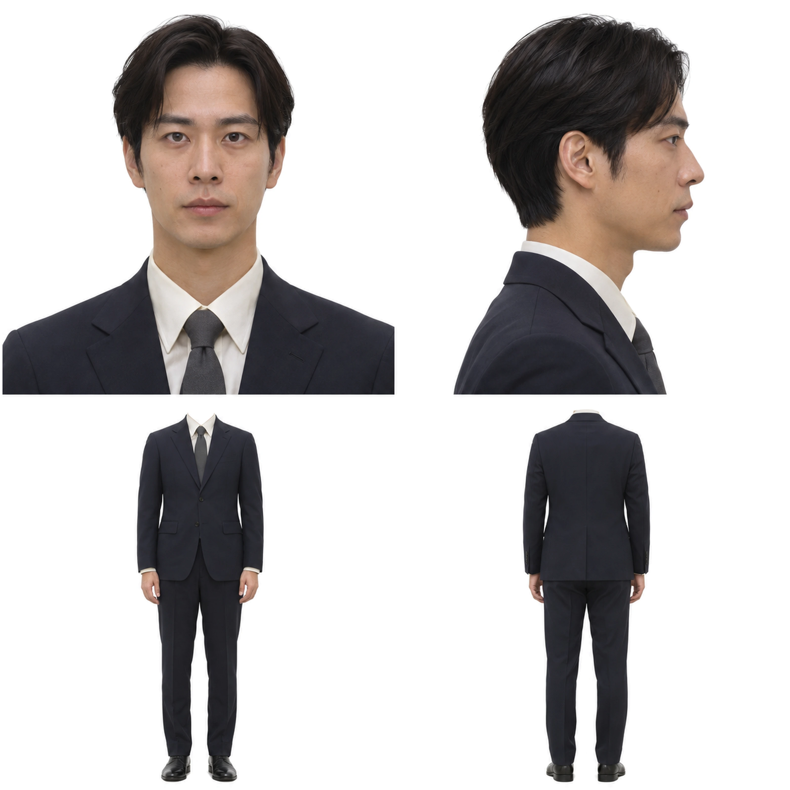
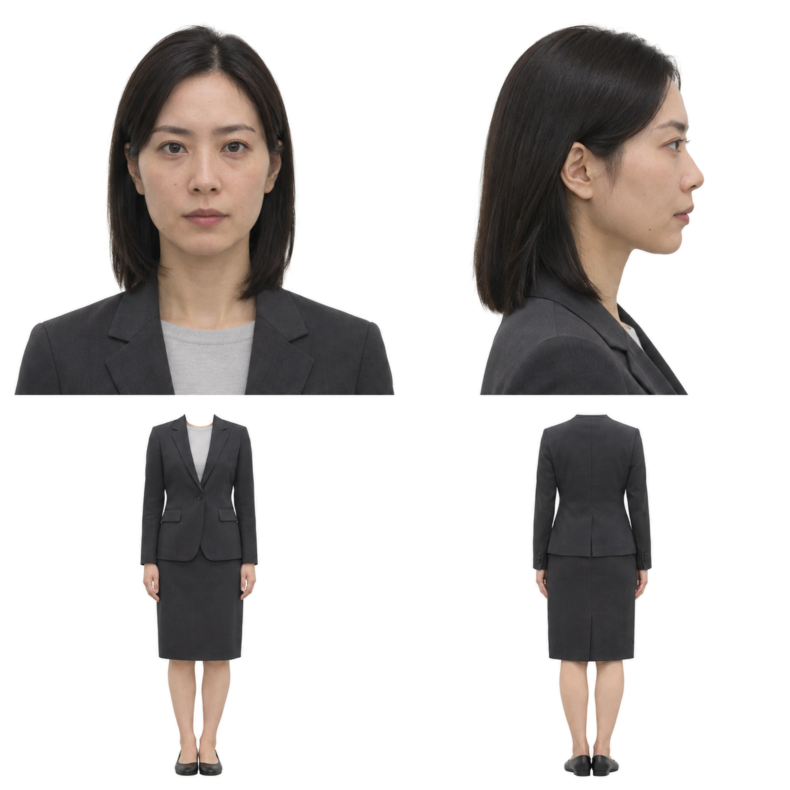
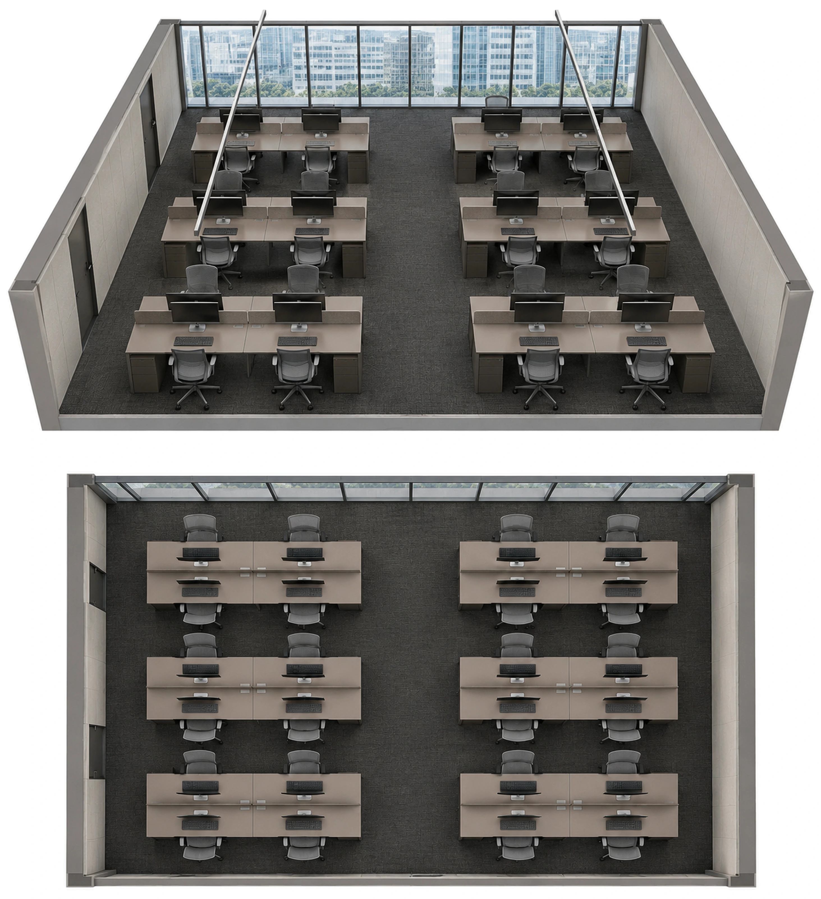
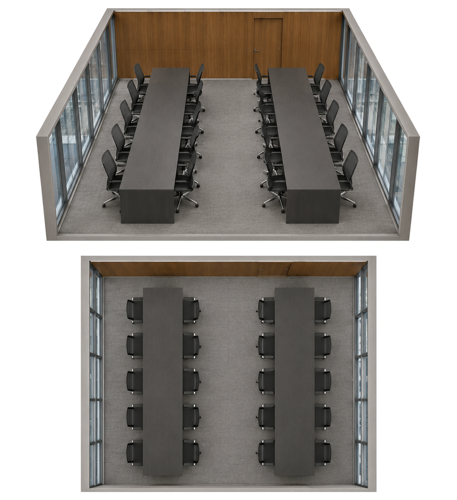
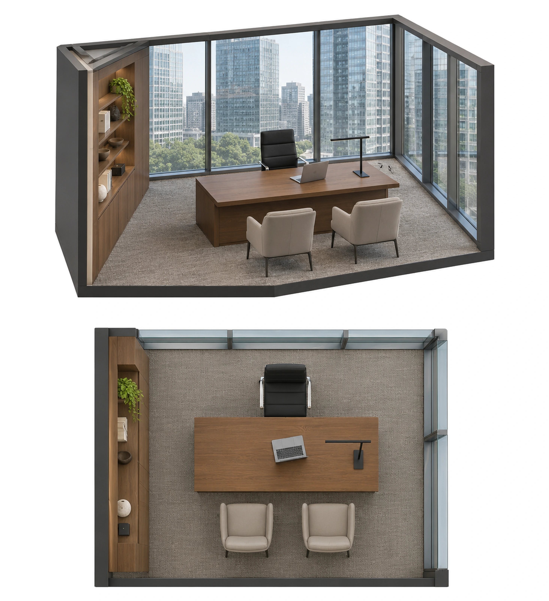
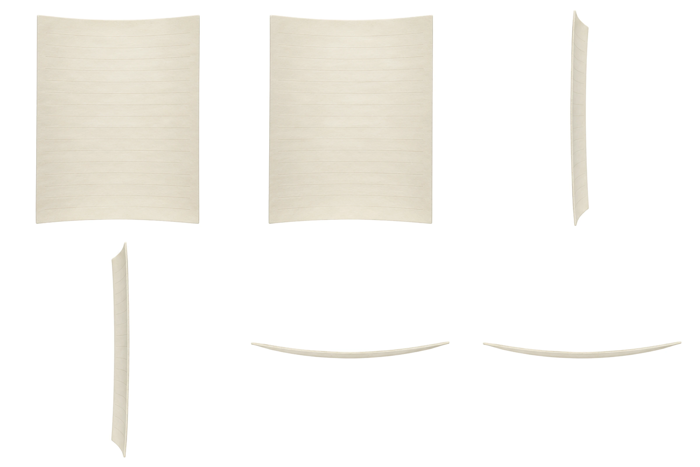
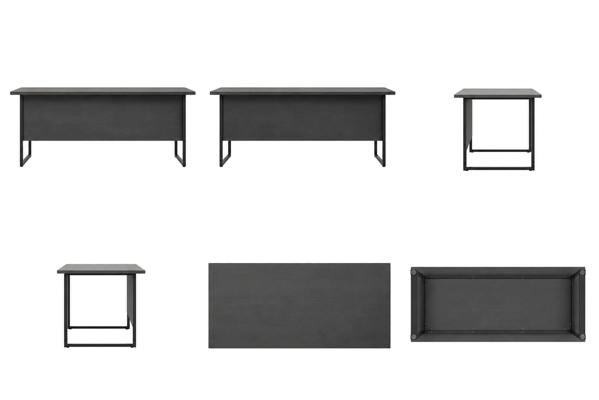

环大陆地区短剧
环大陆地区短剧 · 第二集
正在连接在线视频…
视频简介
米色西装女职员告诉经理自己只是有些疲惫，离开转角办公室后，在走廊查看账户。余额只剩七千日元，她打电话要求核对奖金去向。回到工位，白外套同事当众提议去银座聚餐，然后来拉她同行。两人并肩离开，结尾以过曝转场留下付款悬念。
在快手观看原视频 ↗制作资产
角色资产

白外套女同事
穿白外套的同事，围绕共同报酬和消费与女职员发生争执。 长卷发、白色短外套、酒红裙装，留小金耳饰。 成片未完整展示的方位按可见造型补全。

黑西装短发女经理
后段在转角办公室交文件并讨论案件。 短波波发，修身黑西装配白上衣，始终站在桌外一侧。 成片未完整展示的方位按可见造型补全。

米色西装状态
主线女职员在转角办公室的浅色西装造型。 低马尾，米色西装配白衫。坐着抬头与女经理交流。 成片未完整展示的方位按可见造型补全。

会议男同事
坐在长桌两侧的职员，随主讲者发言转头。 深蓝西装、白衬衫和深领带，提供前景与正反打视线。 成片未完整展示的方位按可见造型补全。

会议女同事
坐在主讲人附近的职员，听见邀请时抬头观察。 深灰西装，浅灰内搭，深色半裙，短及肩直发。 成片未完整展示的方位按可见造型补全。
场景资产

开放办公区
开放办公区的场景视觉设定，用于空间布局、光影与镜头背景。
深灰玻璃走廊
深灰玻璃走廊的场景视觉设定，用于空间布局、光影与镜头背景。

长排桌公司会议室
长排桌公司会议室的场景视觉设定，用于空间布局、光影与镜头背景。

转角落地窗办公室
转角落地窗办公室的场景视觉设定，用于空间布局、光影与镜头背景。
道具资产

黑色手机
深色平板式手机，正面黑屏、背面镜头组。 供账单/交易核验补镜，屏幕文字为后期。 成片未完整展示的方位按可见造型补全。

账单纸
浅白纵向清单，只有素色横规则。 从女职员持纸反打接餐厅与店铺的金额提示。 成片未完整展示的方位按可见造型补全。

银灰笔记本电脑
银黑薄机身，折开的屏幕保持素面。 在办公室桌上作为经理谈文件的前景。 成片未完整展示的方位按可见造型补全。

办公桌横臂灯
黑色横灯罩配窄立杆和低圆底座。 摆于窗边、桌内侧，强化办公室构图。 成片未完整展示的方位按可见造型补全。

黑色办公键盘
炭黑矮键盘，矩形圆角、素键帽。 放于开放工位前右方。 成片未完整展示的方位按可见造型补全。

灰色案卷夹
闭合灰封案夹，黑书脊。 经理从桌旁抱起，推到米色西装女职员面前。 成片未完整展示的方位按可见造型补全。
网背办公椅
黑网靠背、软座、弯扶手和五轮底座。 用于办公室和会议室长桌侧，保证人员座位方向。 成片未完整展示的方位按可见造型补全。

长方会议桌
长方炭灰桌面，素面挡板，深金属脚。 多桌平行排列，构成白衣同事发言时的透视通道。 成片未完整展示的方位按可见造型补全。
剧本与分镜
完整剧本与分镜脚本
环大陆地区短剧 · 第二集 原片时长 76.56 秒 故事梗概 米色西装女职员告诉经理自己只是有些疲惫，离开转角办公室后，在走廊查看账户。余额只剩七千日元，她打电话要求核对奖金去向。回到工位，白外套同事当众提议去银座聚餐，然后来拉她同行。两人并肩离开，结尾以过曝转场留下付款悬念。 人物 主角沿用米色西装状态，短发女经理留在转角办公室，白外套同事当众发出邀请。会议男女同事承担听众的反应。 场景 转角办公室延续前集，深灰走廊承担通话与手机特写，开放办公区和长排桌会议区承担回到同事人群的变化。 道具用途 手机用于通话和余额信息，屏幕字段在剪辑时叠入。案卷、键盘、电脑、灯、长桌与网背椅构成办公室位置关系。 剧本与分镜 按原片抽帧重建的复拍制作稿。画面未能确认的对白、音效与镜头节奏按下表执行。 | 镜号 | 画面内容 | 镜头视角 | 使用资产 | 动作描述 | 台词/旁白 | 音效 | 单镜头时长 | | 01 | 女经理与女职员隔桌继续谈话 | 窗侧双人中景 | 转角落地窗办公室、黑西装短发女经理、米色西装状态、灰色案卷夹 | 经理坐在桌后，女职员在桌外转向她 | 经理：你现在感觉怎么样？ | 空调底音 | 6.00秒 | | 02 | 女职员坐直回应 | 经理肩后的中近景 | 米色西装状态、转角落地窗办公室 | 双手并拢放膝，勉强笑一下 | 女职员：只是有点累。 | 衣袖摩擦 | 7.00秒 | | 03 | 她离开转角办公室，在走廊拨打电话 | 跟拍中景切走廊背面 | 米色西装状态、深灰玻璃走廊、黑色手机 | 起身走出，靠墙拨号 | — | 门声、脚步、拨号等待 | 5.00秒 | | 04 | 屏幕从通话切换到余额列表 | 手机极近景 | 黑色手机、米色西装状态 | 拇指轻触屏幕，展示余额 | 屏幕信息：余额 7,000 日元。 | 触屏音、通话声压低 | 7.00秒 | | 05 | 女职员压低声音确认款项 | 走廊正面近景 | 米色西装状态、黑色手机、深灰玻璃走廊 | 把手机贴到胸前，谨慎地向走廊两端看 | 女职员：我的钱是什么时候被扣掉的？ | 低环境音、短停顿 | 9.00秒 | | 06 | 她继续询问入账和奖金 | 走廊侧面中近景 | 黑色手机、米色西装状态 | 将手机放到耳边，语气更加果断 | 女职员：绩效奖金那天，先不要打进原来的账户。 | 通话中轻电声 | 10.00秒 | | 07 | 她回到开放办公区 | 长过道尽头的全景 | 开放办公区、米色西装状态、网背办公椅 | 沿左侧走进工位区域，停在过道边 | — | 键盘声、电脑风扇 | 6.00秒 | | 08 | 白外套同事向大家宣布聚餐 | 会议长桌轴线中远景 | 白外套女同事、会议男同事、会议女同事、长方会议桌、长排桌公司会议室 | 白衣同事在对面站着，几位听众转椅看她 | 白衣同事：我们去银座那家高级餐厅吧。 | 掌声、同事应和 | 9.00秒 | | 09 | 白外套同事走近并挽住她 | 两人侧面近景 | 白外套女同事、米色西装状态、开放办公区 | 主角仍在原地，白衣同事贴近主动邀请 | 白衣同事：一起去吧。 | 脚步、轻交谈 | 6.70秒 | | 10 | 两人一起朝城市窗景走去 | 后背跟拍中全景 | 两位女职员、开放办公区、网背办公椅 | 她短暂微笑，接着两人穿过工位并排走 | 画外：到了结账的时候，这张卡还能刷吗？ | 步声渐远 | 6.80秒 | | 11 | 画面过曝进入悬念结尾 | 顺窗光反射过渡 | 开放办公区、两位女职员 | 白光盖过空间，留出末尾问句 | — | 高频上扬后淡出 | 4.06秒 | 时长合计 76.56 秒